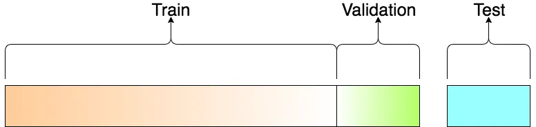

Code
import os
#os.system('pip install xgboost')with titanic data
import os
#os.system('pip install xgboost')import os
import pandas as pd
import matplotlib.pyplot as plt
import seaborn as sns
import re
import numpy as np
from sklearn import tree
from sklearn.model_selection import train_test_split
import time
from siuba import *
from sklearn.experimental import enable_halving_search_cv # noqa
from sklearn.model_selection import HalvingGridSearchCV# Loading the data
df_train = pd.read_csv('./data/train.csv')
df_test = pd.read_csv('./data/test.csv')
# Store our test passenger IDs for easy access
PassengerId = df_train['PassengerId']
PassengerId_test = df_test['PassengerId']
df_train = df_train >> select(~_.PassengerId)
df_test = df_test >> select(~_.PassengerId)
# Showing overview of the train dataset
df_train.head()| Survived | Pclass | Name | Sex | Age | SibSp | Parch | Ticket | Fare | Cabin | Embarked | |
|---|---|---|---|---|---|---|---|---|---|---|---|
| 0 | 0 | 3 | Braund, Mr. Owen Harris | male | 22.0 | 1 | 0 | A/5 21171 | 7.2500 | NaN | S |
| 1 | 1 | 1 | Cumings, Mrs. John Bradley (Florence Briggs Th... | female | 38.0 | 1 | 0 | PC 17599 | 71.2833 | C85 | C |
| 2 | 1 | 3 | Heikkinen, Miss. Laina | female | 26.0 | 0 | 0 | STON/O2. 3101282 | 7.9250 | NaN | S |
| 3 | 1 | 1 | Futrelle, Mrs. Jacques Heath (Lily May Peel) | female | 35.0 | 1 | 0 | 113803 | 53.1000 | C123 | S |
| 4 | 0 | 3 | Allen, Mr. William Henry | male | 35.0 | 0 | 0 | 373450 | 8.0500 | NaN | S |
sns.countplot(x='Survived', data=df_train);
sns.catplot(x='Survived', col='Sex', kind='count', data=df_train);
print(df_train[df_train.Sex == 'female'].Survived.sum()/df_train[df_train.Sex == 'female'].Survived.count())
print(df_train[df_train.Sex == 'male'].Survived.sum()/df_train[df_train.Sex == 'male'].Survived.count())0.7420382165605095
0.18890814558058924# Store target variable of training data in a safe place
survived_train = df_train.Survived
df_train['role'] = 'train'
df_test['role'] = 'test'
# Concatenate training and test sets
data = pd.concat([df_train.drop(['Survived'], axis=1), df_test])data.info()<class 'pandas.core.frame.DataFrame'>
Index: 1309 entries, 0 to 417
Data columns (total 11 columns):
# Column Non-Null Count Dtype
--- ------ -------------- -----
0 Pclass 1309 non-null int64
1 Name 1309 non-null object
2 Sex 1309 non-null object
3 Age 1046 non-null float64
4 SibSp 1309 non-null int64
5 Parch 1309 non-null int64
6 Ticket 1309 non-null object
7 Fare 1308 non-null float64
8 Cabin 295 non-null object
9 Embarked 1307 non-null object
10 role 1309 non-null object
dtypes: float64(2), int64(3), object(6)
memory usage: 122.7+ KB# Dealing with missing numerical variables
#data['Age'] = data.Age.fillna(data.Age.median())
#data['Fare'] = data.Fare.fillna(data.Fare.median())
# Check out info of data
data.info()<class 'pandas.core.frame.DataFrame'>
Index: 1309 entries, 0 to 417
Data columns (total 11 columns):
# Column Non-Null Count Dtype
--- ------ -------------- -----
0 Pclass 1309 non-null int64
1 Name 1309 non-null object
2 Sex 1309 non-null object
3 Age 1046 non-null float64
4 SibSp 1309 non-null int64
5 Parch 1309 non-null int64
6 Ticket 1309 non-null object
7 Fare 1308 non-null float64
8 Cabin 295 non-null object
9 Embarked 1307 non-null object
10 role 1309 non-null object
dtypes: float64(2), int64(3), object(6)
memory usage: 122.7+ KB# Tranform Sex feature to numeric value
# create a new column for each of the options in 'Sex'
# creates a new column for female, called 'Sex_female',
# creates a new column for 'Sex_male'
# more then two categorical values it is better to use one-hot-encode
#data = pd.get_dummies(data, columns=['Sex'], drop_first=True)
data.head()| Pclass | Name | Sex | Age | SibSp | Parch | Ticket | Fare | Cabin | Embarked | role | |
|---|---|---|---|---|---|---|---|---|---|---|---|
| 0 | 3 | Braund, Mr. Owen Harris | male | 22.0 | 1 | 0 | A/5 21171 | 7.2500 | NaN | S | train |
| 1 | 1 | Cumings, Mrs. John Bradley (Florence Briggs Th... | female | 38.0 | 1 | 0 | PC 17599 | 71.2833 | C85 | C | train |
| 2 | 3 | Heikkinen, Miss. Laina | female | 26.0 | 0 | 0 | STON/O2. 3101282 | 7.9250 | NaN | S | train |
| 3 | 1 | Futrelle, Mrs. Jacques Heath (Lily May Peel) | female | 35.0 | 1 | 0 | 113803 | 53.1000 | C123 | S | train |
| 4 | 3 | Allen, Mr. William Henry | male | 35.0 | 0 | 0 | 373450 | 8.0500 | NaN | S | train |
# Select features columns
#data = data[['Sex', 'Fare', 'Age','Pclass', 'SibSp','role']]
data.head()| Pclass | Name | Sex | Age | SibSp | Parch | Ticket | Fare | Cabin | Embarked | role | |
|---|---|---|---|---|---|---|---|---|---|---|---|
| 0 | 3 | Braund, Mr. Owen Harris | male | 22.0 | 1 | 0 | A/5 21171 | 7.2500 | NaN | S | train |
| 1 | 1 | Cumings, Mrs. John Bradley (Florence Briggs Th... | female | 38.0 | 1 | 0 | PC 17599 | 71.2833 | C85 | C | train |
| 2 | 3 | Heikkinen, Miss. Laina | female | 26.0 | 0 | 0 | STON/O2. 3101282 | 7.9250 | NaN | S | train |
| 3 | 1 | Futrelle, Mrs. Jacques Heath (Lily May Peel) | female | 35.0 | 1 | 0 | 113803 | 53.1000 | C123 | S | train |
| 4 | 3 | Allen, Mr. William Henry | male | 35.0 | 0 | 0 | 373450 | 8.0500 | NaN | S | train |
60% training / 30% validation/ 10% testing

Y=df_train['Survived']
X=data[data.role =='train']
#X_train,X_test,Y_train,Y_test=train_test_split(X,Y,train_size = 0.8)
training_size=0.8
validation_size=0.1
testing_size=0.1
X_train, X_val, Y_train, Y_val= train_test_split(X, Y, test_size=validation_size, random_state=1)
X_train, X_test, Y_train, Y_test= train_test_split(X_train, Y_train, test_size=testing_size/training_size, random_state=1)
X_train = X_train.drop('role', axis=1)
X_val = X_val.drop('role', axis=1)
X_test = X_test.drop('role', axis=1)X_train.info()<class 'pandas.core.frame.DataFrame'>
Index: 700 entries, 658 to 554
Data columns (total 10 columns):
# Column Non-Null Count Dtype
--- ------ -------------- -----
0 Pclass 700 non-null int64
1 Name 700 non-null object
2 Sex 700 non-null object
3 Age 559 non-null float64
4 SibSp 700 non-null int64
5 Parch 700 non-null int64
6 Ticket 700 non-null object
7 Fare 700 non-null float64
8 Cabin 160 non-null object
9 Embarked 698 non-null object
dtypes: float64(2), int64(3), object(5)
memory usage: 60.2+ KBlen(X_train)/(len(X_train) +len(X_val) +len(X_test) )0.7856341189674523len(X_val)/(len(X_train) +len(X_val) +len(X_test) )0.10101010101010101len(X_test)/(len(X_train) +len(X_val) +len(X_test) )0.11335578002244669categorical_cols = [cname for cname in X_train.columns
if X_train[cname].nunique() < 10 and X_train[cname].dtype == "object"]
numerical_cols = numerical_cols = [cname for cname in X_train.columns
if X_train[cname].dtype in ['int64', 'float64']]print("The total number of categorical columns:", len(categorical_cols))
print("The total number of numerical columns:", len(numerical_cols))The total number of categorical columns: 2
The total number of numerical columns: 5my_cols = categorical_cols + numerical_cols
X_train = X_train[my_cols].copy()
X_val = X_val[my_cols].copy()
X_test= X_test[my_cols].copy()
my_cols
#X_final = df_test[my_cols].copy()['Sex', 'Embarked', 'Pclass', 'Age', 'SibSp', 'Parch', 'Fare']from sklearn.pipeline import Pipeline
from sklearn.impute import SimpleImputer
from sklearn.preprocessing import StandardScalernumerical_transformer = Pipeline(steps=[
('imputer_num', SimpleImputer(strategy='median')),
('scaler', StandardScaler())
])from sklearn.preprocessing import OneHotEncoder
categorical_transformer = Pipeline(steps=[
('imputer_cat', SimpleImputer(strategy='most_frequent')),
('onehot', OneHotEncoder(handle_unknown='ignore'))
])from sklearn.compose import ColumnTransformer
preprocessor = ColumnTransformer(transformers=[
('num', numerical_transformer, numerical_cols),
('cat', categorical_transformer, categorical_cols)])import xgboost
print(xgboost.__version__)2.0.3from xgboost import XGBClassifier
xgb_model = XGBClassifier()
xgb_modelXGBClassifier(base_score=None, booster=None, callbacks=None,
colsample_bylevel=None, colsample_bynode=None,
colsample_bytree=None, device=None, early_stopping_rounds=None,
enable_categorical=False, eval_metric=None, feature_types=None,
gamma=None, grow_policy=None, importance_type=None,
interaction_constraints=None, learning_rate=None, max_bin=None,
max_cat_threshold=None, max_cat_to_onehot=None,
max_delta_step=None, max_depth=None, max_leaves=None,
min_child_weight=None, missing=nan, monotone_constraints=None,
multi_strategy=None, n_estimators=None, n_jobs=None,
num_parallel_tree=None, random_state=None, ...)In a Jupyter environment, please rerun this cell to show the HTML representation or trust the notebook. XGBClassifier(base_score=None, booster=None, callbacks=None,
colsample_bylevel=None, colsample_bynode=None,
colsample_bytree=None, device=None, early_stopping_rounds=None,
enable_categorical=False, eval_metric=None, feature_types=None,
gamma=None, grow_policy=None, importance_type=None,
interaction_constraints=None, learning_rate=None, max_bin=None,
max_cat_threshold=None, max_cat_to_onehot=None,
max_delta_step=None, max_depth=None, max_leaves=None,
min_child_weight=None, missing=nan, monotone_constraints=None,
multi_strategy=None, n_estimators=None, n_jobs=None,
num_parallel_tree=None, random_state=None, ...)from sklearn.ensemble import RandomForestClassifier
random_forest_model = RandomForestClassifier()
random_forest_modelRandomForestClassifier()In a Jupyter environment, please rerun this cell to show the HTML representation or trust the notebook.
RandomForestClassifier()
from sklearn.linear_model import LogisticRegression
LogisticRegression_model = LogisticRegression(solver='liblinear')
LogisticRegression_modelLogisticRegression(solver='liblinear')In a Jupyter environment, please rerun this cell to show the HTML representation or trust the notebook.
LogisticRegression(solver='liblinear')
pipeline_xgb = Pipeline(
steps=[
('preprocessor', preprocessor),
('model', xgb_model)
]
)
pipeline_rf = Pipeline(
steps=[
('preprocessor', preprocessor),
('model', random_forest_model)
]
)
pipeline_lr = Pipeline(
steps=[
('preprocessor', preprocessor),
('model', LogisticRegression_model)
]
)# Grid_xgb = HalvingGridSearchCV(pipeline_xgb
# ,parameters
# ,scoring='accuracy'
# ,max_resources=100
# , cv=10, n_jobs=-1)
#
# Grid_rf = HalvingGridSearchCV(pipeline_rf
# ,parameters
# ,scoring='accuracy'
# ,max_resources=100
# , cv=10, n_jobs=-1)
#
# Grid_lr = HalvingGridSearchCV(pipeline_lr
# ,parameters
# ,scoring='accuracy'
# ,max_resources=100
# , cv=10, n_jobs=-1) start_time = time.time()
pipelines = [pipeline_xgb, pipeline_rf, pipeline_lr, ]
for pipe in pipelines:
pipe.fit(X_train,Y_train)
end_time = time.time()
duration = end_time - start_time
duration0.10587692260742188grid_dict = {0: 'XGB', 1: 'random forest', 2: 'linear regression'}
for i, model in enumerate(pipelines):
print('{} Test Accuracy: {}'.format(grid_dict[i],
model.score(X_test,Y_test)))
#print('{} Best Params: {}'.format(grid_dict[i], model.best_params_))XGB Test Accuracy: 0.8514851485148515
random forest Test Accuracy: 0.801980198019802
linear regression Test Accuracy: 0.7821782178217822#Using predict method to test the model
Y_pred_dt = pipeline_xgb.predict(X_test) #always gets x and retuns y
Y_pred_dtarray([0, 0, 0, 1, 0, 0, 0, 0, 0, 0, 1, 0, 0, 0, 1, 0, 0, 0, 0, 0, 0, 0,
1, 0, 0, 0, 0, 0, 0, 0, 1, 0, 0, 0, 0, 0, 1, 1, 1, 0, 0, 0, 0, 1,
0, 0, 0, 1, 0, 1, 0, 1, 1, 1, 0, 0, 1, 0, 0, 0, 0, 1, 1, 1, 0, 0,
0, 0, 1, 0, 0, 0, 0, 0, 1, 0, 0, 0, 0, 1, 0, 0, 1, 1, 0, 0, 1, 1,
1, 1, 0, 0, 1, 1, 0, 1, 0, 1, 0, 0, 0])# Accuracy = true negatives + true positives / true positives + false positives + true negatives + false negatives
# Here is another way to find the accuracy score
from sklearn import metrics
accuracy = metrics.accuracy_score(Y_test,Y_pred_dt)
accuracy0.8514851485148515# Precision = true positive / true positive + false positive
precision_dt = metrics.precision_score(Y_test,Y_pred_dt)
precision_dt0.8064516129032258# Recall = true positive / true positive + false negative
recall_dt = metrics.recall_score(Y_test,Y_pred_dt)
recall_dt0.7352941176470589import seaborn as sns
confusion_matrix_dt = metrics.confusion_matrix(Y_test,Y_pred_dt)
confusion_matrix_dtarray([[61, 6],
[ 9, 25]])auc_dt = metrics.roc_auc_score(Y_test, Y_pred_dt) # as the documentation explain, the main parameters are: y_true and y_score
auc_dt0.8228709394205443import numpy as np
from sklearn.model_selection import KFold
from sklearn.model_selection import cross_val_scorekf_dt = KFold(n_splits=5,shuffle=True)
cv_dt = cross_val_score(pipeline_xgb, X_train, Y_train, cv=kf_dt)
np.mean(cv_dt)0.8042857142857143from joblib import dump, load
dump(pipeline_xgb, 'trained_pipeline_8.joblib', compress=True) ['trained_pipeline_8.joblib']model_reload = load('trained_pipeline_8.joblib') Y_pred_dt_final = model_reload.predict(X_val) #always gets x and retuns y
Y_pred_dt_final[0:5]array([1, 0, 1, 1, 1])https://github.com/alicevillar/titanic-kaggle/blob/main/Titanic_DecisionTree.ipynb
https://github.com/ray-project/tune-sklearn
https://medium.com/distributed-computing-with-ray/gridsearchcv-2-0-new-and-improved-ee56644cbabf